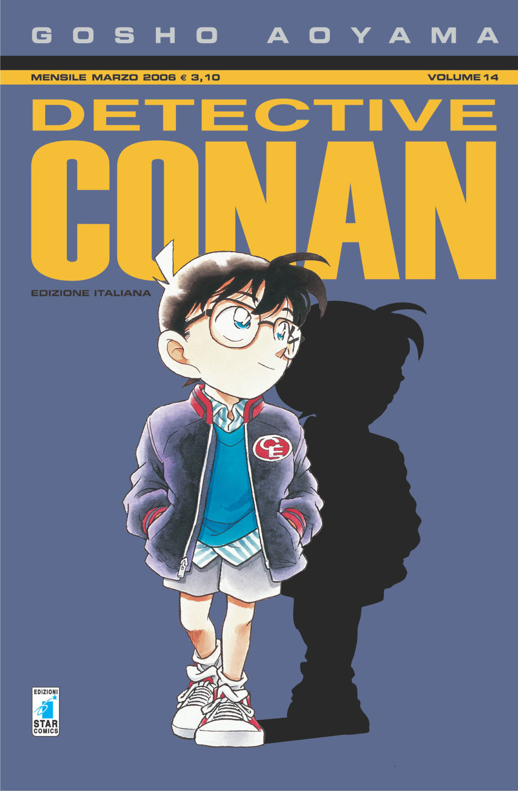

Shatter me Case Closed, also known as Detective Conan (Japanese: 名探偵コナン, Hepburn: Meitantei Konan, lit. "Great Detective Conan"), is a Japanese detective manga series written and illustrated by Gosho Aoyama. It has been serialized in Shogakukan's shōnen manga magazine Weekly Shōnen Sunday since January 1994, with its chapters collected in 102 tankōbon volumes as of September 2022.
The cases of a detective whose physical age was chemically reversed to that of a prepubescent boy but must hide his true mental development. Japanese high school student Kudo Shinichi is a well-known detective, known as the savior of the Japanese police.
Jimmy Kudo (Japanese name: Shinichi Kudo) is a high school detective who sometimes works with the police to solve cases.[2] During an investigation, he is ambushed and incapacitated by a member of a crime syndicate known as the Black Organization. In an attempt to murder the young detective, they force-fed him a dangerous experimental drug.
Kudo later encounters an elementary school transfer student, Anita Hailey (Ai Haibara), who reveals herself to be a former member of the Black Organization under the code name "Sherry" and the creator of the experimental drug that shrunk him.
Shinichi's childhood friend, and later his girlfriend. She doesn't know Conan's real identity. She's the one taking care of him along with her detective father, Kogoro. She is also skilled in karate. More Info...
Private eye and Ran's father. Separated from Eri Kisaki, Ran's mother. More Info...